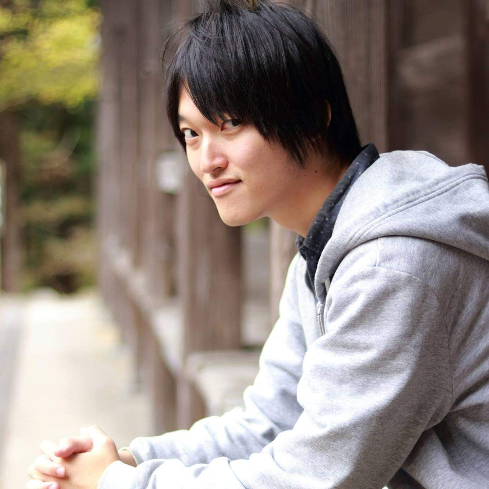

Yoshi's Photography
HOME
PROFILE
PHOTOGRAPH
FILM
CONTACT

島根県在住の大学生Photographer
主な撮影テーマは、ポートレートや松江の文化・風景など
最近は動画作成なども行っている
【経歴】
2016年 TEDxShimaneUにデザインチームリーダーとして参加
2017年 Canon EOS 80Dを購入し、趣味としてカメラを始める
2018年 写真家僧侶・豅 純吾（ながたにじゅんご）を師として仰ぐ
2019年 チーム水燈路広報チームに正式加入
【使用機材】
Sony α7Ⅲ
TAMRON 28-75mm F/2.8 di III RXD (Model A036)
ｱﾙﾐﾆｳﾑ三脚4段 3WAY雲台
【編集ソフト】
Adobe Lightroom
Davinci Resolve 15